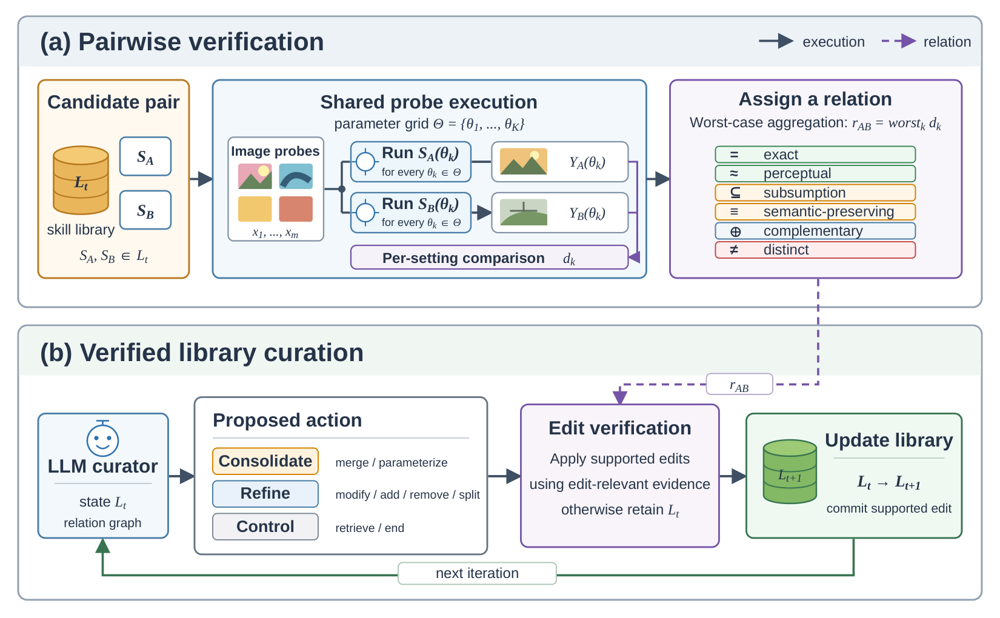

Method
Problem formulation
A skill is a function that is deterministic once its seed is fixed:
\[ f : \mathcal{X} \times \Theta_f \times \mathbb{N} \rightarrow \mathcal{X}, \qquad y = f(x;\, \theta,\, s) \]
Given a probe battery \(P\) and a canonicalization map \(\phi\), the verifier assigns every ordered pair
\((A, B)\) exactly one relation from
{EXACT, PERCEPTUAL, SUBSUMPTION, SEMANTIC, COMPLEMENTARY, DISTINCT} ∪ {UNCERTAIN}.
Text judges and the output verifier are all compared on one binary decision, mergeability:
\[ \mathrm{merge}(A,B) = \mathbf{1}\big[\, R(A,B) \in \{\mathsf{EXACT},\ \mathsf{PERCEPTUAL}\} \,\big] \]
The verifier states facts about outputs; the curation agent makes repository decisions.
System overview

Figure 2. Overview of the VisCurate pipeline. (a) A noisy seed skill library is
evaluated through an output-grounded equivalence verifier, which executes candidate skills on shared probes and
certifies their behavioral relations from the resulting outputs. (b) These verified relations guide the
structural edits proposed by the curation agent, which are validated before updating the library. The process
repeats until a compact and organized skill library is produced.
Output canonicalization
Skills return heterogeneous outputs (grayscale, RGBA, binary masks, edge maps, resized canvases). Before
any comparison, outputs pass through a versioned contract (CANON_VERSION = 1.0.0):
| Aspect | Rule |
|---|
| dtype and range | float32 ∈ [0, 1] for metrics; a uint8 view is kept for hashing |
| channels | 1-channel outputs are replicated to 3; RGBA is composited over a fixed mid-grey with alpha tracked separately |
| shape | identical shape is a precondition for EXACT/PERCEPTUAL, so L∞ = ∞ on mismatch |
| binary masks | detected and compared by exact match and IoU, not by LPIPS |
| hashing | SHA-256 over the uint8 view, shape, mask flag, alpha and contract version |
A six-relation taxonomy
Each relation, the evidence that certifies it, and the action it licenses. Only the first two rows license a merge.
| Relation | Certified when (from outputs only) | Aggregation | Licensed action |
|---|
| EXACT | all canonical hashes are equal, or worst-case L∞ ≤ ε | max over sweep × probes | merge |
| PERCEPTUAL | worst-case LPIPS ≤ τperc(1−δ) and worst-case (1−SSIM) ≤ τssim | max | merge |
| SUBSUMPTION (A ⊑ B) | every binding of A is reproduced by some binding of B, but not the reverse | ∀∃ grid search | parameterize (fold A into B) |
| SEMANTIC_PRESERVING | DINO (or CLIP) cosine distance with p90 ≤ τsem(1−δ) and mean ≤ τsem | p90 + mean | parameterize, or keep both (never merge) |
| COMPLEMENTARY | both skills change the image, and A∘B ≈ B∘A within tolerance | worst case | keep both |
| DISTINCT | none of the above (residual class) | — | keep separate |
| UNCERTAIN | the deciding distance falls inside the band [τ(1−δ), τ(1+δ)] | — | route to human review |
Hierarchical, text-blind verification
The classifier checks relations from cheapest and strictest to most expensive, and stops at the first
relation that holds. The two merge-licensing relations must hold on every probe, so they use the
worst case over the matched sweep \(\mathcal{S}_{AB}\) and the probes \(P_{AB}\) on which both skills
produced an output:
\[ d_m^{\max}(A,B) = \max_{(\theta_A,\theta_B) \in \mathcal{S}_{AB}} \; \max_{p \in P_{AB}} \; d_m\!\left(\phi\big(f_A(p;\theta_A,s)\big),\, \phi\big(f_B(p;\theta_B,s)\big)\right) \]
If \(P_{AB}\) is empty, \(d^{\max}\) is set to \(+\infty\), so a pair with no comparable evidence can never be
certified. SEMANTIC_PRESERVING describes a distribution of distances and takes the more conservative of the
two semantic backends:
\[ D_{AB} = \Big\{ \max\big(d_{\mathrm{DINO}}(p),\, d_{\mathrm{CLIP}}(p)\big) \Big\}_{p}, \qquad
\mathsf{SEM} \iff Q_{0.9}(D_{AB}) \le \tau_{\mathrm{sem}}(1-\delta) \;\wedge\; \overline{D_{AB}} \le \tau_{\mathrm{sem}} \]
When two skills do not share a declared sweep axis, a directional grid search decides subsumption. If each
skill reproduces the other, the result is EXACT/PERCEPTUAL instead. This is why
crop_center_percentage is correctly labelled a special case of
crop_bounding_box rather than a duplicate.
\[ A \sqsubseteq B \iff \forall\, \theta_A \in \mathcal{G}_A \; \exists\, \theta_B \in \mathcal{G}_B :\; f_A(\cdot\,;\theta_A) \approx f_B(\cdot\,;\theta_B) \text{ on } P, \;\text{ and not } B \sqsubseteq A \]
flowchart TD
IN["Candidate pair (A, B)
two ComparatorViews + an OutputProvider
no description attribute exists"] --> Q{"Shared matched-sweep axis,
or both parameter-free?"}
Q -->|yes| EX{"All hashes equal, or
worst-case L∞ ≤ ε?"}
EX -->|yes| R_EX["EXACT → merge"]
EX -->|no| PE{"Worst-case LPIPS ≤ τ(1−δ)
and 1−SSIM ≤ τ_ssim?"}
PE -->|yes| R_PE["PERCEPTUAL → merge"]
PE -->|"LPIPS inside the band"| R_UN["UNCERTAIN → human review"]
PE -->|no| SEM
Q -->|no| GS{"Directional grid search
over both parameter grids"}
GS -->|"mutual reproduction"| R_EQ["EXACT / PERCEPTUAL → merge"]
GS -->|"one direction only"| R_SU["SUBSUMPTION A ⊑ B → parameterize"]
GS -->|neither| SEM
SEM{"DINO / CLIP distance:
p90 ≤ τ_sem(1−δ) and mean ≤ τ_sem?"}
SEM -->|yes| R_SE["SEMANTIC_PRESERVING → parameterize or keep"]
SEM -->|"p90 inside the band"| R_UN
SEM -->|no| CO{"Both non-trivial
and A∘B ≈ B∘A?"}
CO -->|yes| R_CO["COMPLEMENTARY → keep both"]
CO -->|no| R_DI["DISTINCT → reject merge"]
Figure 3. The stop-at-first classifier. Subsumption is checked before the semantic stage so
that a loose semantic match cannot hide a directional special-case relation. Every verdict carries its
deciding distances and the worst-case probe.
Calibration and abstention
Thresholds are calibrated, never hand-tuned on test data. Each τ is set to the most permissive
value that keeps precision on non-equivalence ≥ 0.99, subject to a recall floor of 0.5, on a
cluster-disjoint split: each operator family goes wholly into calibration or wholly into test. The band
half-width δ is the smallest value that lifts precision outside the band to target. The perceptual
backbone is LPIPS (AlexNet); the semantic backbones are DINO ViT-B/16 and CLIP ViT-B/32.
| Symbol | Config key | Value | Role |
|---|
| ε | exact_epsilon | 1/255 ≈ 0.0039 | rounding tolerance for EXACT |
| τperc | perceptual_lpips | 0.05 | worst-case LPIPS bound |
| τssim | perceptual_ssim | 0.10 | 1−SSIM floor, catches cases LPIPS misses |
| τsem | semantic_dino | 0.15 | p90 semantic distance bound |
| q | semantic_quantile | 0.90 | aggregation quantile for the semantic stage |
| τcomm | complementary_lpips | 0.05 | commutation tolerance |
| δ | abstention_delta | 0.05 (calibrated run) | band half-width |
Output-based candidate screening
Verifying all O(n²) pairs is expensive, and filtering candidates by description similarity would
reintroduce the very bias under study. Instead, each skill gets an output fingerprint on a 12-probe
screening sub-battery (average-hash bits plus a mean DINO feature). For each skill the screen proposes the
k nearest neighbours within fingerprint distance r, and always adds every same-family pair and
every engineered hard negative. Because fingerprints come from outputs, two skills with unrelated
descriptions but the same behaviour still end up as candidates.
Verifier-gated curation
The agent sees a CurationState (skill summaries with internal defect labels removed, usage
statistics, action history) and proposes one of eight actions (add, remove,
modify, retrieve, merge, split, parameterize,
end) within a budget of 200 actions per episode. The gate grants permission; whether an
edit is desirable remains the agent's decision.
| Verifier relation | Edit permitted |
|---|
| EXACT · PERCEPTUAL | merge |
| SUBSUMPTION | parameterize (fold the specialization into the generalizer) |
| SEMANTIC_PRESERVING | parameterize / unify, or keep both |
| COMPLEMENTARY · DISTINCT | none (keep separate) |
| UNCERTAIN | none (human review) |
sequenceDiagram
autonumber
participant A as Curation agent (LLM)
participant E as CurationEnvironment
participant V as Verifier (text-blind)
participant L as Library L_ρ
A->>E: merge(primary, secondary)
E->>V: classify(view_primary, view_secondary)
V-->>E: relation, distances, worst_probe
alt the relation licenses the edit
E->>L: apply the edit
E-->>A: APPLIED
else no certifying relation
E-->>A: REJECTED + evidence
end
Figure 4. The curation loop. Agents are pluggable: scripted, any OpenAI-compatible endpoint (including local vLLM), Ollama, or the Anthropic API.
Neural and stochastic skills
Operators such as SAM 2.1 or Depth Anything V2 have no shared seed space, so their outputs cannot be compared
point by point. For these, VisCurate replaces the point distance with a
per-probe two-sample test: the unbiased MMD² between K = 16 stochastic draws of each skill,
with a Gaussian kernel whose bandwidth is set by the median heuristic.
\[ \widehat{\mathrm{MMD}}{}^2_u(p) = \frac{1}{K(K-1)}\sum_{i\neq j} k(a_i,a_j) + \frac{1}{K(K-1)}\sum_{i\neq j} k(b_i,b_j) - \frac{2}{K^2}\sum_{i,j} k(a_i,b_j), \qquad a_i \sim A(p),\; b_j \sim B(p) \]
The null comes from 2,000 within-probe permutations; a probe rejects equivalence when
\(p \le \alpha/|P|\) (Bonferroni, \(\alpha = 0.05\)), and one rejecting probe refutes equivalence, the same
worst-case rule as the deterministic path. Every non-rejection is reported next to the skill's own
self-variance baseline.